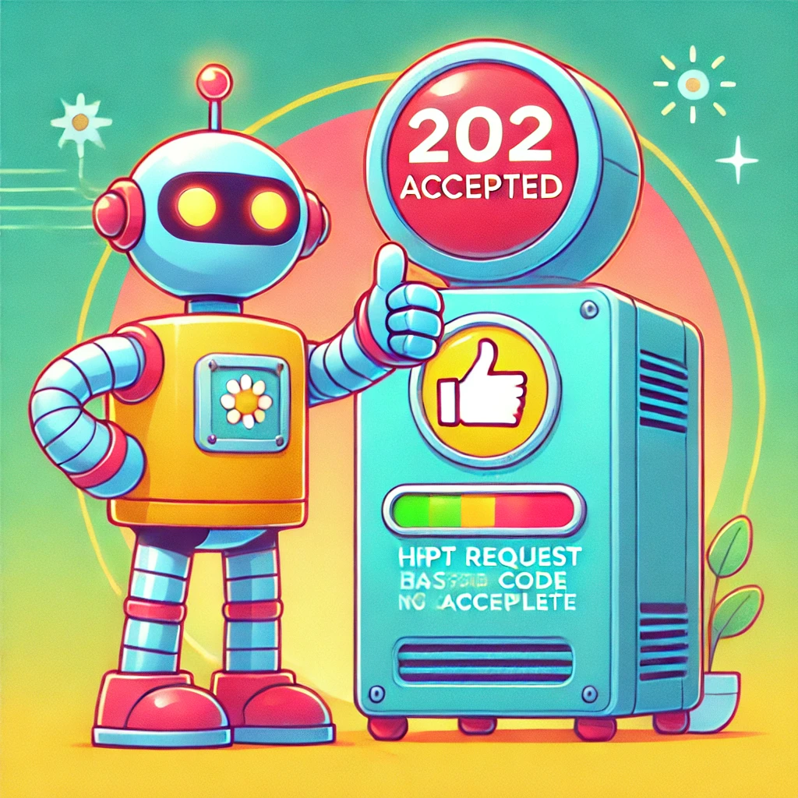

100 - Continue
O robô está em movimento contínuo, representando que a requisição pode seguir adiante sem problemas.
101 - Switching Protocols
O robô troca de direção entre dois caminhos, simbolizando a mudança de protocolo solicitada pelo cliente.
102 - Processing
O robô está concentrado com sua prancheta, representando que a tarefa já foi iniciada e está sendo processada.
200 - OK
O robô celebra o sucesso da operação — tudo funcionou corretamente!
201 - Created
O robô exibe sua criação com orgulho, simbolizando que algo novo foi gerado.
202 - Accepted
Com um joinha confiante, o robô mostra que o pedido foi aceito — mas o trabalho ainda está por vir.
204 - No Content
Mesmo sem nada para mostrar, o robô está bem — a operação foi realizada com sucesso.
301 - Moved Permanently
O robô está de mudança, seguindo uma nova rota permanente.
302 - Found
Nosso robô encontra múltiplos caminhos — o destino mudou, mas só por enquanto.
304 - Not Modified
Sem mudanças! O robô confirma que não há atualizações necessárias.
400 - Bad Request
O robô está tentando entender o que deu errado com as informações recebidas.
401 - Unauthorized
Mesmo com cartão na mão, o robô não consegue passar — autorização é necessária.
403 - Forbidden
Nosso robô não tem permissão para entrar, mesmo tentando de tudo.
404 - Not Found
O robô está perdido e procurando por algo que não está mais aqui.
500 - Internal Server Error

Algo explodiu por dentro! O robô claramente está com dificuldades internas.
502 - Bad Gateway
Nosso robô não está entendendo nada — algo falhou na comunicação entre servidores.
503 - Service Unavailable
Hora do cochilo! O robô está fora de serviço por enquanto.
504 - Gateway Timeout
O robô está esperando há tanto tempo que já perdeu a paciência. Nada de resposta!